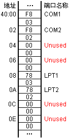

输入输出功能是计算机的重要组成部分，是人—机交互功能的主要承担者。在早期的计算机系统中，通常把输入输出设备或功能作为次要的部分，而把CPU作为主要研究对象。但现在随着输入输出设备的日益丰富、功能要求越来越复杂，输入输出部分在整个计算机系统中的地位也得到了进一步提高。
本章先介绍了I/O的基本概念和I/O指令，再叙述了中断的概念及其工作过程，并列举出计算机系统中若干个常用的中断及其功能。
输入输出是一个完整应用程序的重要组成部分，是交互式应用程序不可缺少的组成部分。
在用高级语言编程时，程序员可直接用输入输出语句来完成键盘输入、屏幕显示或打印输出等需求，而无需关心这些输入输出语句是如何实现的，因为编译程序会自动把这些语句转换成相应的输入输出指令。但如果用汇编语言编写程序的话，情况就不同了，因为汇编语言是与机器有关的程序设计语言，要编写出具有输入输出功能的代码段就必须清楚CPU为输入输出提供了哪些指令，或计算机系统提供了哪些可直接使用的功能调用。
I/O端口是CPU与输入输出设备的交换数据的场所，通过I/O端口，处理机可以接受从输入设备输入的信息；也可向输出设备发送信息。在计算机系统中，为了区分各类不同的I/O端口，就用不同的数字给它们进行编号，这种对I/O端口的编号就称为I/O端口地址。按照
每次可交换一个字节数据的端口称为字节端口，每次可交换一个字数据的端口称为字端口。
在Intel公司的CPU家族中，I/O端口的地址空间可达64K，即可有65536个字节端口，或32768个字端口。这些地址不是内存单元地址的一部分，不能普通的访问内存指令来读取其信息，而要用专门的I/O指令才能访问它们。虽然CPU提供了很大的I/O地址空间，但目前大多数微机所用的端口地址都在0~3FFH范围之内，其所用的I/O地址空间只占整个I/O地址空间的很小部分。表8.1列举了几个重要的I/O端口地址。
| 端口地址 | 端口名称 | 端口地址 | 端口名称 |
| 020H~023H | 中断屏蔽寄存器 | 378H~37FH | 并行口LPT2 |
| 040H~043H | 时针/计数器 | 3B0H~3BBH | 单色显示器端口 |
| 060H | 键盘输入端口 | 3BCH~3BFH | 并行口LPT1 |
| 061H | 扬声器(0, 1位) | 3C0H~3CFH | VGA/EGA |
| 200H~20FH | 游戏控制口 | 3D0H~3DFH | CGA |
| 278H~27FH | 并行口LPT3 | 3F0H~3F7H | 磁盘控制器 |
| 2F8H~2FFH | 串行口COM2 | 3F8H~3FFH | 串行口COM1 |
计算机在启动时，BIOS程序(Basic Input/Output System)将检查计算机系统中有哪些端口地址。当发现有串行端口地址时，BIOS就把 该端口存放在以地址40:00H开始的数据区内；当发现有并行端口地址时，BIOS会把它 存入以地址40:08H开始的数据区内。
每类端口有4个字的空间，对有二个串行口、二个并行口的计算机系统，其BIOS程序将得到如图8.1所示的部分数据表。
图中03F8H、02F8H、0378H和0278H分别为COM1、COM2、LPT1和LPT2的端口地址。
